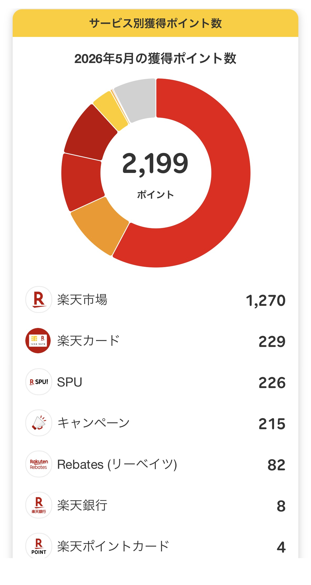

楽天モバイルに乗り換えると
月いくら節約できる？
社員の実収支スクショ付きで計算
「本当に得するの？」乗り換えを考えている方のいちばん大きな疑問に、実数字で答えます。auから乗り換えた楽天グループ社員の実収支をもとに、大手キャリアからの乗り換えで月いくら変わるかを3パターンで試算。SPUポイント還元を加味した「実質コスト」まで計算します。
著者の実収支：auから月3,278円へ変わった話
結論から言います。私はauから楽天モバイルに乗り換えて、月の支払いが約5,500円から3,278円になりました。
差額は毎月約2,222円。年間に換算すると約2万6千円の節約です。5年間での累計節約額は13万円超になっています（個人の体験例です）。
これに加えて、楽天市場でのSPUポイント還元が毎月上乗せされています。5月の実績では合計2,199ポイントを獲得しました（楽天市場1,270・楽天カード229・SPU226・キャンペーン215・その他）。SPU分だけでも月換算で200円以上の還元効果があり、実質的なコストはさらに低くなっています。
もちろんこれは私個人のケースです。乗り換え前のキャリア・プラン・使い方によって節約額は変わります。以下では3パターンに分けて試算します。
※ 比較する大手キャリアの料金は「一般的な無制限・中容量プランの相場感」として記載しています。各社の実際の料金・プラン名は変更になる場合があります。正確な料金は各社公式サイトでご確認ください。
楽天モバイルの料金プラン（2026年6月時点）
楽天モバイル「Rakuten最強プラン」は、データ使用量に応じて料金が自動的に変わるシンプルな1プランです。
| データ使用量 | 通常 | 最強家族割適用時 |
|---|---|---|
| 〜3GB | 1,078円/月 | 968円/月 |
| 3GB〜20GB | 2,178円/月 | 2,068円/月 |
| 20GB超〜無制限 | 3,278円/月 | 3,168円/月 |
Rakuten Linkアプリ使用で無制限。0570・188等の特番は対象外。
107カ国・月2GBまで無料。
4回線目まで無料（5回線目以降3,850円）。
試算① 大容量・無制限ユーザーの場合
動画視聴・テザリングなどでデータをたくさん使い、大手キャリアの「無制限プラン」を契約しているケースです。
大手3キャリアの無制限プランは、割引やセット割を加味しない単体では月7,000〜8,000円台が相場です（2026年6月時点の一般的な相場感。各社公式サイトでご確認ください）。
| キャリア | 月額の目安 | 楽天との月差額 | 年間節約目安 |
|---|---|---|---|
| 大手キャリアA （ドコモ・au・SoftBankの相場） |
約7,000〜8,000円 | 約3,722〜4,722円 | 約4.5〜5.7万円 |
| 楽天モバイル （Rakuten最強プラン） |
3,278円 | — | — |
大手キャリアの料金は割引なし・単体契約の相場感です。各社の家族割・セット割・割引クーポンを適用済みの方は、実際の差額はこれより小さくなります。乗り換えを判断する前に、現在の明細で「実際にいくら払っているか」を確認することをおすすめします。
データ無制限で使い倒している方にとっては、楽天モバイルへの乗り換えが最もコスト削減効果を実感しやすいパターンです。
試算② 中容量ユーザーの場合（20GB前後）
月20GB前後を使うケースです。大手キャリアでは「20GBプラン」や「中容量プラン」が月4,000〜5,000円台が相場です（各社公式サイトでご確認ください）。
| データ量 | 大手キャリア月額目安 | 楽天モバイル | 月差額目安 |
|---|---|---|---|
| 20GB前後 | 約4,000〜5,000円 | 2,178円 （3〜20GBプラン） |
約1,822〜2,822円 |
| 無制限に切り替え | 約7,000〜8,000円 | 3,278円 （20GB超〜無制限） |
約3,722〜4,722円 |
試算を見て「乗り換えてもよさそう」と思った方へ
社員の紹介リンクから申し込むと、乗り換えで最大14,000ptもらえます。通常の申し込みと手順はまったく同じです。
※ 最大14,000ptはMNP乗り換え（10,000pt）＋紹介キャンペーン（最大13,000ptのうち楽天モバイル初回申し込み分）を組み合わせた場合の目安です。各キャンペーンの適用条件・要エントリー・付与期間は公式サイトでご確認ください。キャンペーン内容は予告なく変更される場合があります。
紹介リンクから申し込む（乗り換え最大14,000P）ポイントを加味した実質コストは 次のセクション でさらに詳しく計算しています。
試算③ 楽天市場ユーザーの場合（ポイント込み実質コスト）
楽天モバイルの本当のお得さは、SPUポイントを加味したときに見えてきます。
楽天モバイルを契約すると、楽天市場での買い物のポイント還元率が+4倍になります。月間上限は2,000ポイント（期間限定ポイント）。要エントリーです。
毎月の楽天市場の購入額によって、SPUで獲得できるポイントは変わります。具体的に試算してみましょう。
| 楽天市場月間購入額 | SPU獲得ポイント目安 （+4倍分のみ） |
楽天モバイル月額 | 実質月額（概算） |
|---|---|---|---|
| 月5,000円 | 約200pt | 3,278円 | 約3,078円 |
| 月10,000円 | 約400pt | 3,278円 | 約2,878円 |
| 月25,000円以上 | 上限2,000pt | 3,278円 | 約1,278円 |
※ 上記「実質月額」は、SPUポイント（期間限定ポイント）を1pt=1円として月額料金から差し引いた概算値です。期間限定ポイントには有効期限があり、楽天市場等の対象サービスでの利用に限られます。ポイントの利用状況・有効期限によっては実質的なコスト削減効果が異なります。また、SPUエントリーが毎月必要です。
上記はSPUポイント（+4倍分）のみの試算です。楽天カードや楽天銀行など他のSPU対象サービスと組み合わせると、さらに還元率が上がります。
私の2026年5月の獲得ポイントは合計2,199ポイント。SPUは226ポイントで、その月の楽天市場での買い物額が少なかったため上限（2,000pt）には届きませんでした。まとめ買いの月はSPU分が大きく増えます。

節約額まとめ一覧
3パターンの試算をまとめます。
| パターン | 月節約目安 | 年間節約目安 | 特に向いている人 |
|---|---|---|---|
| ① 無制限ユーザー | 約3,700〜4,700円 | 約4.5〜5.7万円 | 動画・テザリングを多用する人 |
| ② 中容量ユーザー（20GB前後） | 約1,800〜2,800円 | 約2.2〜3.4万円 | 中容量プランを使っている人 |
| ③ 楽天市場ユーザー（SPU込み） | ポイント込みで実質1,278〜3,078円 | さらに節約効果大 | 楽天市場をよく使う人 |
※ 上記はあくまで目安です。実際の節約額は現在のプラン・割引適用状況・データ使用量・楽天市場の利用状況によって異なります。各キャリアの正確な料金は公式サイトでご確認ください。
節約額の大小より先に確認してほしいのは、あなたの生活圏に楽天回線が届いているかです。どれだけ料金が安くても、繋がらなければ意味がありません。乗り換え前に必ず公式エリアマップで自宅・職場を確認することをおすすめします。エリアが確認できたら、あとは申し込むだけです。
乗り換えを検討中の方にあわせて読んでほしい記事
よくある疑問
あわせて読みたい
新記事・キャンペーン情報をいち早くお届けします。
LINE公式アカウントの友だち追加はこちら。
節約額を確認できた方は、ここから申し込めます
社員の紹介リンクから申し込むと、乗り換えで最大14,000ptもらえます。通常の申し込みと手順はまったく同じです。
※ 最大14,000ptはMNP乗り換え（10,000pt）＋紹介キャンペーン（最大13,000ptのうち楽天モバイル初回申し込み分）を組み合わせた場合の目安です。各キャンペーンの適用条件・要エントリー・付与期間は公式サイトでご確認ください。キャンペーン内容は予告なく変更される場合があります。
紹介リンクから申し込む（乗り換え最大14,000P）まだ迷っている方は 向いてる人・向いてない人の診断記事 →